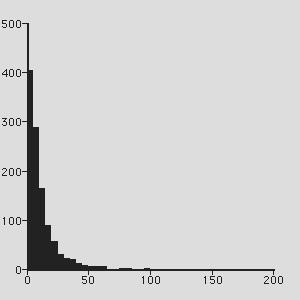

- resources -
|
In 2000, Michael Coventry and Jamie Poster revised and expanded the content and Edward Maloney converted it to a new search interface. . The new version is a topical database of over 2,000 web-based resources in American Studies. Read a SiteScene Review of many of the resources in the database. SiteScene features reviews of new web-based resources in American Studies. |
|  |
Grants Information Retrieve information about NIH and NCRR grants programs. Access the NIH Guide, PHS Grants Policy Statements, and CRISP database. Meeting information for special review committees and the National Advisory Research Resources Council is also available. Access Research Resources Check directories to find NCRR-supported research resources and information on how to access them. NCRR Publications Access NCRR directories, reports, publications, and National Advisory Research Resources Council minutes. |
. The award-winning Flashlight Program helps educators and institutions use assessment to guide their uses of technology and control costs. ) and pull together people and resources to improve teaching and learning with technology. ) EASI and WebAIM help institutions use technologies in ways that remove barriers for students and staff with disabilities. An extensive array of free articles, case studies, slideshows and other resources can be reached by clicking on the Resources button on the left hand side of most pages on this site.
|
|
NET will not point to a site that is simply a list of links ------instead ResearchResources. NET will not link to those sites of questionable reliablity. In addition to providing access to a wealth of free electronic resources, ResearchResources. NET provides our users with the opportunity to buy books on related topics through our affiliation with Amazon. Please feel free to drop by our Social Sciences Bookstore. |
another resources site: http://www.researchresources.net/amazon/bookstore.htm